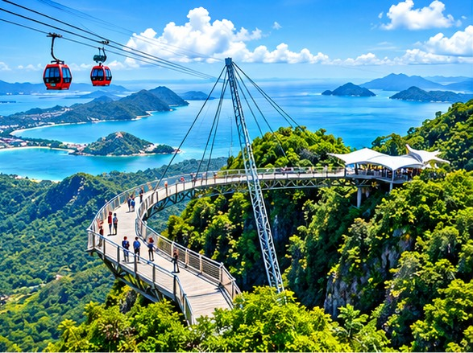
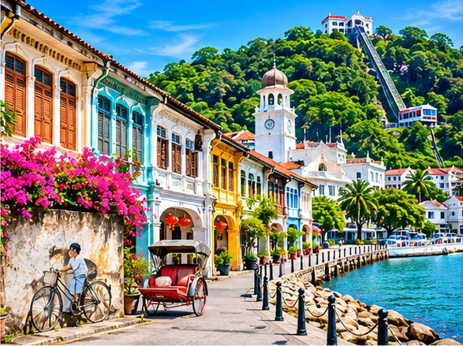
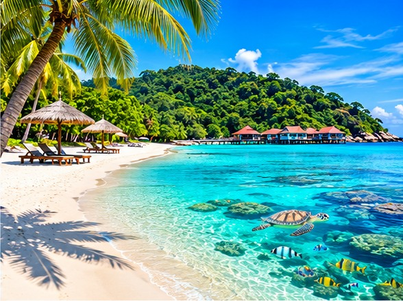
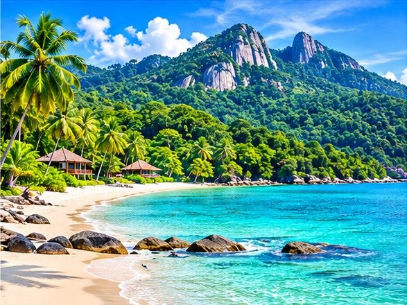

🏝️ الجزر
6 جزر مميزةاختر الجزيرة لاستعراض أهم معالمها وأنشطتها وطرق الوصول إليها. صور البطاقات تصاميم توضيحية مستوحاة من طبيعة كل جزيرة.

لنكاويLangkawi — قدحالجسور المعلقة والتلفريكاستكشف الجزيرة ←

بينانغPenang Island — بينانغالتراث والثقافة والشواطئاستكشف الجزيرة ←

ريدانغRedang Island — ترنغانوشاطئ أبيض وشعاب بحريةاستكشف الجزيرة ←

برهنتيانPerhentian Islands — ترنغانوجزيرتان وشواطئ للسنوركلينغاستكشف الجزيرة ←

تيومانTioman Island — باهانغجبال خضراء وخلجان هادئةاستكشف الجزيرة ←

بانكورPangkor Island — بيراكقرى صيد وشواطئ هادئةاستكشف الجزيرة ←